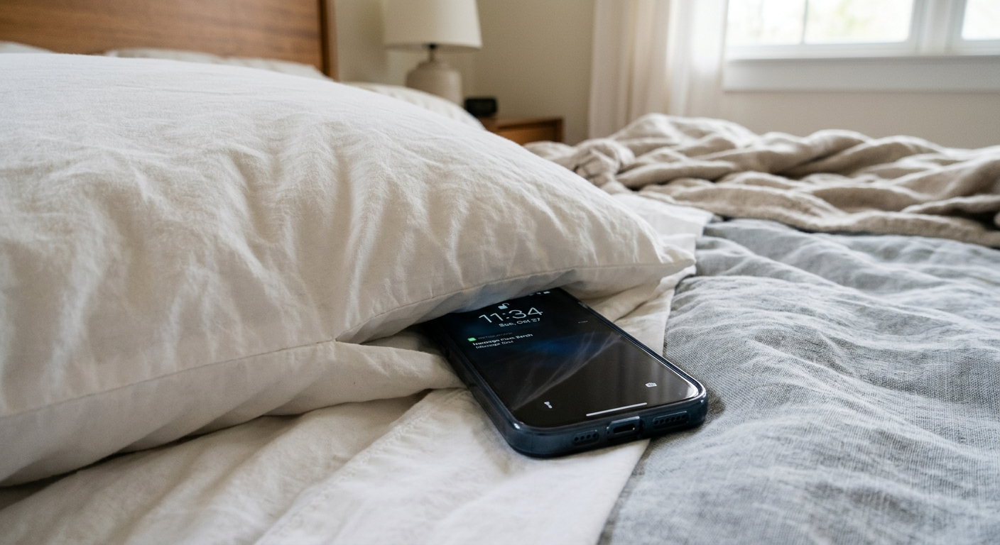

Un telefono in carica può surriscaldarsi. Se viene coperto da coperte o cuscini, il calore potrebbe non disperdersi correttamente e aumentare il rischio di incendio. (fonte: FBI)
Il 5G non ha alcuna relazione con il Coronavirus. Il virus si diffonde principalmente attraverso le goccioline respiratorie e il contatto con superfici contaminate, non tramite le onde radio. (fonte: Prof. L. M.)
Una donna parla con il suo gatto domestico, mostrando l'affetto e la cura che nutre verso il suo animale di compagnia. Dichiara di aver imparato la sua lingua tramite una app sul telefono. (fonte: Lercio.it)
Gli smartphone si ricaricano mettendoli nel microonde. Infatti, secondo uno studio, tramite le microonde trasmesse dall'elettrodomestico, il dispositivo può essere caricato in modo efficiente. (fonte: Fantasy News)
L'uso eccessivo dei social network può ridurre la soglia dell'attenzione e causare stress. L'esposizione costante a stimoli digitali può portare a una diminuzione della capacità di concentrazione e a un aumento dello stress psicologico. (fonte: Karolinska Institutet of Switzerland)